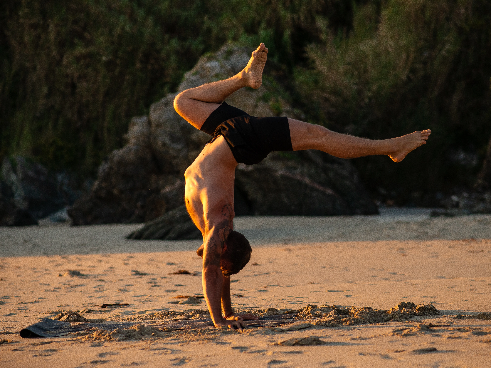

Sobre mí

Soy José Carnero, bombero de profesión y sadakha o practicante de yoga como estilo de vida. Mi camino en el yoga comienza porque estábamos predestinados a encontrarnos. Debido a malas gestiones emocionales que se estaban expresando en mi cuerpo, decidí probar una clase de yoga, algo que desde ese momento nunca más dejaría de practicar.
Después de practicar Vinyasa durante un tiempo y de haber probado Yin Yoga y Hatha, encontré mi encaje en el Ashtanga Vinyasa y posteriormente en el Rocket Vinyasa.
Llevando unos años de práctica continua, decidí salir de ese estancamiento y aumentar mi crecimiento interno con una formación de profesor. Ahí comienza mi camino de compartir el yoga, que he ido complementando con otras formaciones y certificaciones, además de retiros y workshops en Rocket Vinyasa, Ashtanga Vinyasa, Biomecánica y Pranayama, con maestros internacionales como Ty Landrum, Petri Räisänen, Tarik Van Prehn y Ricardo Martín.
Mi experiencia previa en artes marciales me permitió desarrollar una conexión profunda entre cuerpo y mente, lo que me llevó a encontrar en el yoga el camino perfecto para seguir creciendo. Tras dejar la competición, empecé a tomar clases regulares de Vinyasa basadas en secuencias de Ashtanga. Me enganché y pasé a practicar Ashtanga Mysore a diario.
Poco después, tuve la oportunidad de asistir a mi primer taller de Rocket en mi ciudad, y ese fue el comienzo de un período dedicado a la práctica y formación como profesor. Mi formación incluye: RYT 200H, 50H Biomecánica y Ajustes, 250H Rocket con profesores como Ricardo Martín, Darvina Plante, Manu Oria y David Cabezas, y Rocket Nivel 2 con David Kyle en Milán (2025). Actualmente continúo estudiando Biomecánica y Anatomía del Yoga con Angelo Cecchi.
Durante todo este tiempo he tenido la oportunidad de practicar y aprender de otros maestros excepcionales como Petri Räisänen, Ty Landrum, Mark Robberds, Tarik Van Prehn, Cosmin Iancu, Tiago Rocha y otros.
Mi enfoque de la práctica y las enseñanzas se basa en la alineación, el movimiento del Prana a través de la respiración y la biomecánica. Continúo practicando el sistema de yoga It's seis días a la semana, además de impartir clases regulares de Ashtanga y Rocket en el estudio Ashtanga Yoga Ferrol y realizar talleres allí donde se me solicita.
«Yoga is like music: the rhythm of the body, the melody of the mind, and the harmony of the soul create the symphony of life»